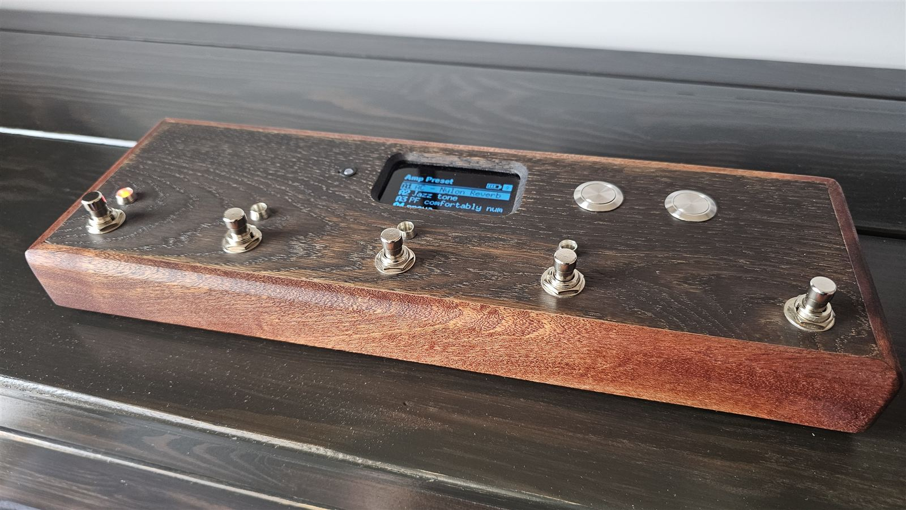
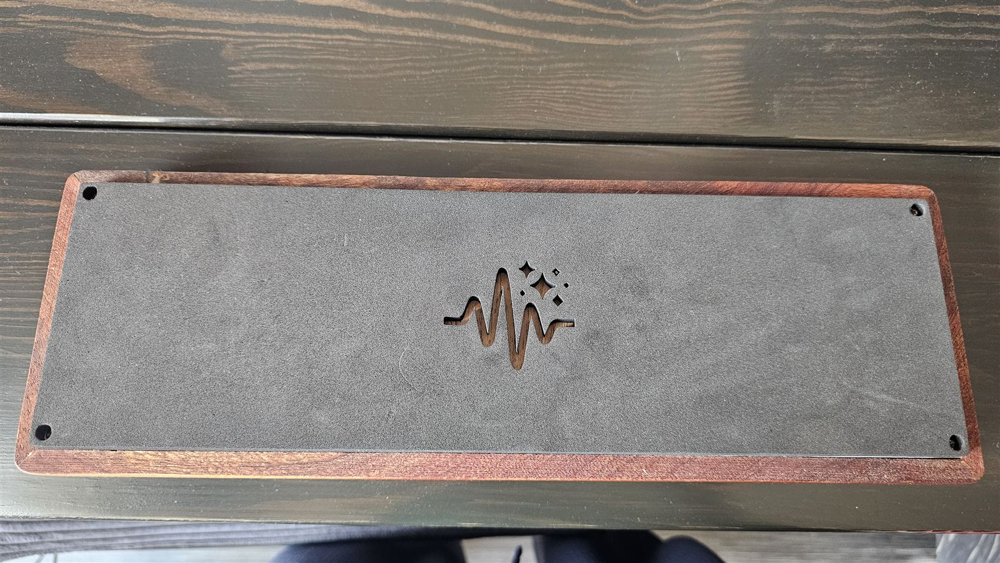
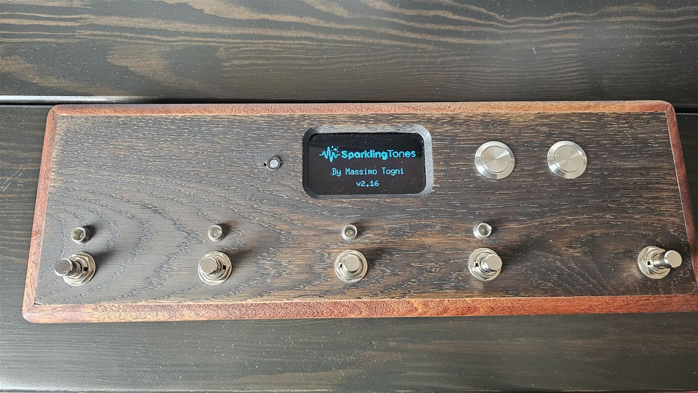
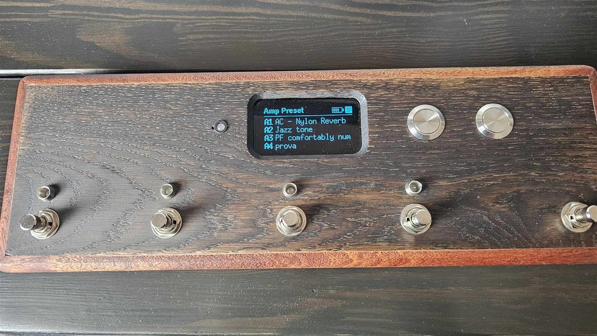
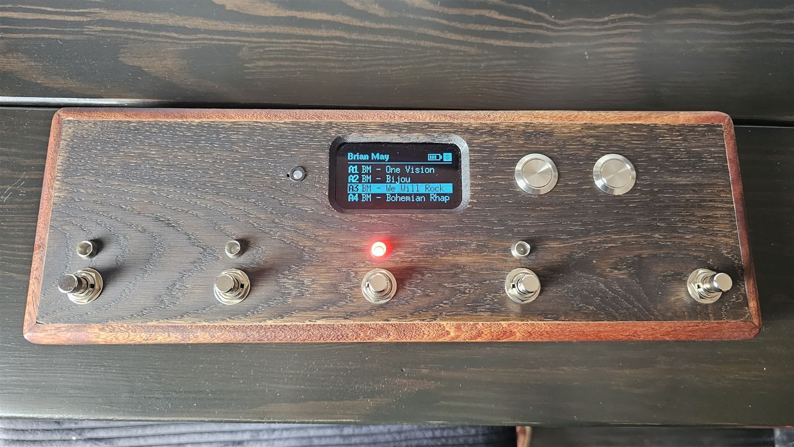
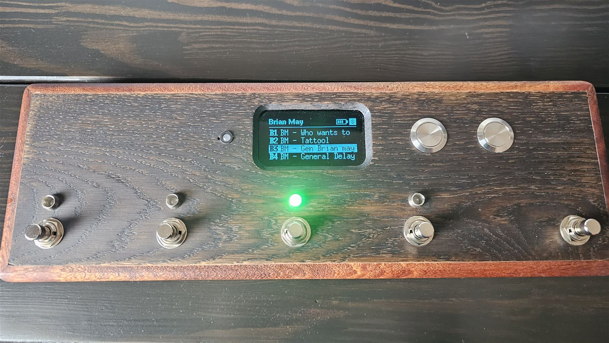
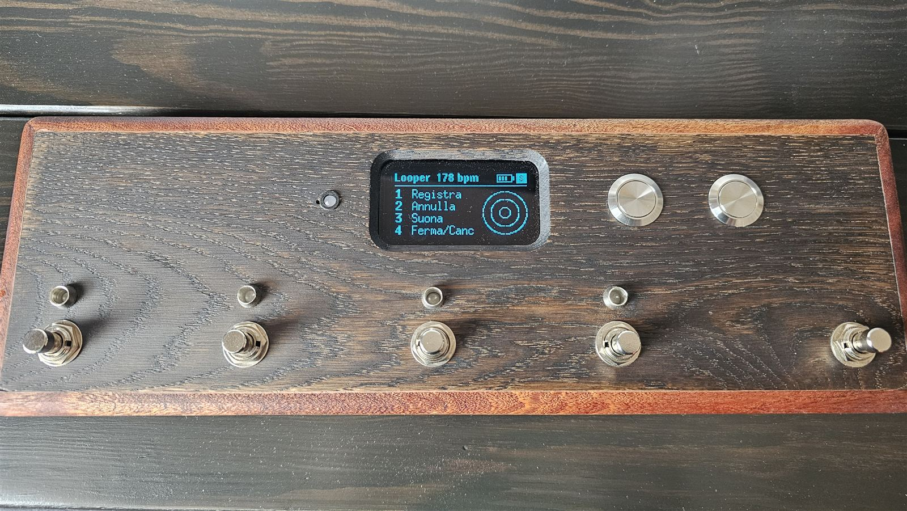
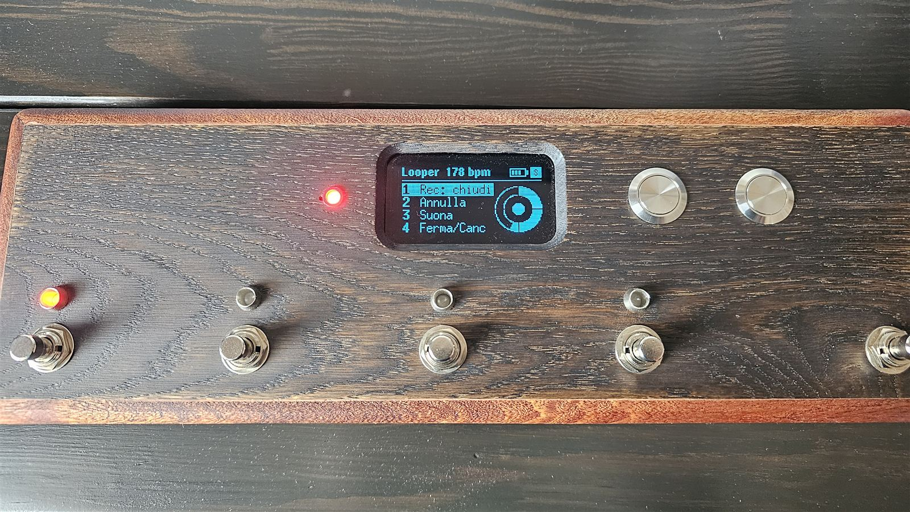

What it is
The app's Live view, taken off the phone and put under your foot.
The pedal connects by itself, over Bluetooth, to the Spark 2 or the Spark NEO. The phone is only needed to put banks together and send them over; after that it stays in your pocket.

- Footswitches 1–4: the four presets of the half on screen (A1–A4 or B1–B4).
- Footswitch 5: shows the other half without changing the sound; held for 3 seconds it opens the looper.
- Bank buttons: previous and next bank. «Amp Preset» is the amp's own slots; you send the others from the app.
- LEDs above the footswitches: they show what's playing, red for half A and green for half B.
- Tempo LED and click: they beat the looper's tempo and count in before recording.
- MIDI mode: the same pedal controls a program on a computer or an iPad.
The names of the parts
Throughout this guide each part has one name only:
| name | what it is |
|---|---|
| board | the perfboard carrying the XIAO and the expander |
| XIAO | the small microcontroller board with the USB-C socket (Seeed XIAO ESP32-S3) |
| expander | the small board with the MCP23017 chip, the one marked PA and PB: it reads the buttons and drives the LEDs |
| rail | a strip of bare solder along the board: the 3V3 rail and the GND rail (ground) |
| header / connector | the row of pins soldered on the board, where a cable plugs in |
| line | one pin of the expander: PA0…PA7, PB0…PB7 |
| top panel | the top face of the case, the one you step on |
| case | the wooden enclosure |
| cable | a bundle of wires from the board to the top panel |
| LED strip | the strip of perfboard with the four LEDs and their resistors, behind the top panel |
| footswitches | the five foot switches |
| bank buttons | the two small hand buttons |
| buttons | footswitches and bank buttons together: seven |
You need to know how to solder. The guide explains everything else step by step, but soldering a wire to a pad and using a multimeter (voltage and diode test) are taken for granted.
Parts
Everything inside the prototype. Buy more resistors and connectors than you need: they cost less than the shipping.
| part | qty | what it's for, and what to check when buying |
|---|---|---|
| Electronics | ||
| Seeed XIAO ESP32-S3 | 1 | the brain. It must be the S3: it's the only XIAO that can act as a USB MIDI controller. With its stick-on u.FL antenna (it's in the box): without it, Bluetooth doesn't reach the Spark. |
| 2.42" 128×64 OLED display | 1 | SSD1309 controller, 4-pin I²C (VDD, GND, SCL, SDA), address 0x3C. There are 7-pin (SPI) versions: they won't do. |
| MCP23017 expander | 1 | in the prototype a KAmod I2C-IOexp16. Sixteen lines: seven for the buttons, eight for the LEDs. |
| Ceramic capacitor 47–100 nF | 1 | between the expander's supply and ground, close to the chip: it filters out noise. |
| 4.7 kΩ resistors | 2, spare | only if the display won't start (see «Troubleshooting»). |
| Buttons and lights | ||
| Momentary footswitches | 5 | push switches that don't latch (momentary, «soft touch»), single contact (SPST), 12 mm thread. Two terminals are enough. |
| Momentary panel push buttons | 2 | the bank buttons. |
| 5 mm common-cathode RGB LEDs | 5 | four above the footswitches (red and green, blue unused) and one for the tempo (red only). Common cathode, not common anode. |
| 330 Ω resistors | 6 | four on the LEDs' red, one on the tempo LED, one on the click. |
| 560 Ω resistors | 4 | on the LEDs' green: higher than the red on purpose, because at the same current green looks much brighter. |
| 35 mm piezo disc | 1 | the click of the looper's count-in. A bare disc, not a «buzzer»: the magnetic ones are barely audible driven by the XIAO. |
| Power | ||
| Protected 18650 cell | 1 | in the prototype an XTAR 18650, 3300 mAh, «Protected». Don't trust cells rated above 3600 mAh: they don't exist. |
| 1×18650 cell holder with leads | 1 | protected cells are ~69 mm long: pick a holder that takes them. |
| Adafruit 6091 charger (bq25185) | 1 | charges the cell from its own USB-C socket, and the pedal plays while charging. |
| Toggle switch SPST, with nut | 1 | on/off. Metal and sturdy; it goes on the side, not on the top panel. |
| 2-way screw terminal | 1 | the point the battery wires leave from, to the XIAO and to the divider. |
| 100 kΩ resistors | 2 | the divider that lets the pedal read the cell's charge. They must be equal. |
| Small parts | ||
| Perfboard, 2.54 mm pitch | 1 + 1 | one for the board, one strip for the LED strip. |
| Female headers 2.54 mm, 7 pins | 2 | to plug the XIAO in instead of soldering it. |
| JST-XH connectors (2.50 pitch) | a kit | 4 and 5 ways, with the crimping tool. Dupont connectors work loose: in the prototype one lost an LED's ground. |
| JST-PH connectors (2.0 pitch), 2 ways | 2 | the ones that fit the charger's sockets. |
| Thin stranded wire, three colours | a few metres | red for positive, black for ground, another for signals. |
| USB-C extension, male–female, 20 cm | 1 | brings the XIAO's socket outside, for firmware and USB MIDI. A plain extension: the panel-mount lead tried first didn't carry data. |
| Heat-shrink, hot glue, M2–M2.5 standoffs | — | to insulate the resistors, hold the wires, lift the boards off the wood. |
| Case | ||
| 10 mm mahogany strips | — | the sides. |
| 5 mm oak boards | — | top panel and bottom. |
| 3 mm smoked acrylic | 10 × 10 cm | the window over the display. |
| Tools | ||
| Soldering iron and solder, multimeter (voltage, current, diode test), JST crimping tool (in the prototype a DxCRIMP D2032), isopropyl alcohol to clean off flux, a USB-C cable that carries data. | ||
Wiring diagram
Every wire and where it ends up. The next chapters build it one piece at a time.
The XIAO, pin by pin
| pin | goes to |
|---|---|
| 3V3 | 3V3 rail (one wire only) |
| GND | GND rail (one wire only) |
| D4 | SDA of the display and of the expander |
| D5 | SCL of the display and of the expander |
| D0 | the middle of the battery divider |
| D1 | 330 Ω, then the tempo LED's red |
| D3 | 330 Ω, then the piezo disc |
| BAT+ / BAT− | the terminal: battery + and −, after the switch |
| 5V | nothing |
| D6 · D7 | left free on purpose: they're the spare serial port |
| D2 · D8–D10 | free |
The board
XIAO, expander, the two rails and the connectors the top panel's cables plug into.
The rule everything else follows: ground and 3.3 V aren't wires, they're rails. One wire runs from the XIAO to each rail, and everything else connects to the rails. Bringing everything to the XIAO's pin makes a bunch of wires on a single point, ugly to solder and hard to check.
- The rails. On a perfboard make two strips of bare solder from one side to the other: 3V3 rail at the top, GND rail at the bottom. A bare wire laid over the holes and soldered every two or three is fine. The two rails must never touch: that would short the supply.
- The XIAO's headers, top left, with the USB socket towards the edge: that's where the extension that brings the socket out of the case plugs in. The headers let you pull it out to replace it.
- The expander to the right of the XIAO, and the capacitor soldered between its supply pin (V+ or VDD) and ground, as close as possible. A ceramic capacitor has no polarity.
- Expander supply and address. V+ and RST to the 3V3 rail; GND, A0, A1 and A2 to the GND rail. If RST is left floating the chip stays in reset and doesn't answer. If the A pins aren't grounded the address isn't 0x20 and the firmware can't find the expander.
- XIAO to the rails and the bus. 3V3 to the 3V3 rail, GND to the GND rail. D4 to the expander's SDA and to the display connector; D5 to SCL, likewise. SDA and SCL swapped: nothing breaks, but display and expander stay silent.
- The JST-XH connectors. Each one has its own ground wire, taken from the GND rail next to it:
- display, 4 ways: VDD (3V3 rail), GND, SDA (D4), SCL (D5);
- footswitches, 5 ways: G, FS1, FS2, FS3, FS4;
- footswitch 5 and bank buttons, 4 ways: G, FS5, bank L, bank R;
- LEDs 1 and 2, 5 ways: G and four lines PB4…PB7;
- LEDs 3 and 4, 5 ways: G and four lines PB0…PB3;
- tempo LED and click: two wires from D1 and D3 plus ground (a 3-way works too).
- Clean off the flux with isopropyl alcohol and a small brush, before powering up. In the prototype, flux residue under the expander made it heat up: it looked like a dead chip.
The two LED connectors are identical: same number of ways, and you can't see them once the case is closed. Swapped, the left LEDs light up instead of the right ones, and it looks like a firmware bug. Mark them: a dot of colour on one, or better, a pin pulled from the header and the matching hole blocked in the plug.
The display
- Look at the back of the display. There's a row of pads with labels (some in Chinese); the one marked D2 must be closed, i.e. its two halves joined by a blob of solder or a 0 Ω resistor. Open, the display doesn't answer on the bus and stays black. On the prototype's unit it was already closed at the factory.
- Wire it to its connector with four wires: VDD, GND, SCL, SDA, following the display's labels, not the wire colours.
The antenna
The XIAO's stick-on antenna snaps onto the tiny u.FL connector, pressed straight down until it clicks. Only once: that connector survives few insertions. Stick the antenna inside the case, away from metal (footswitches, cell). Wood doesn't block the signal.
Buttons and LEDs
One reads and the other drives: the expander's port A listens to the buttons, port B lights the LEDs.
Which line goes where
This is the map the firmware expects. If you wire it differently nothing bad happens: the guided mapping in «The test» tells you yours, and you write it into the firmware.
| button | FS1 | FS2 | FS3 | FS4 | FS5 | bank L | bank R |
|---|---|---|---|---|---|---|---|
| line | PA4 | PA5 | PA6 | PA3 | PA7 | PA1 | PA0 |
| LED | 1 (above FS1) | 2 (above FS2) | 3 (above FS3) | 4 (above FS4) |
|---|---|---|---|---|
| red · 330 Ω | PB5 | PB7 | PB1 | PB3 |
| green · 560 Ω | PB4 | PB6 | PB0 | PB2 |
PA2 stays free.
Footswitches and bank buttons
- Each footswitch has (at least) two terminals: one to its line, the other to ground. Polarity doesn't matter.
- Ground is daisy-chained: one wire from the connector's G to the first footswitch, from there to the second, and so on. Same for the bank buttons.
- Each line wire goes to its way on the connector, as in the table. Mark on the connector which way is which.
The LED strip
- Find each LED's legs with the multimeter on diode test: black probe on the longest leg (the common cathode), red on one of the others. The LED glows faintly in its colour. Usually the order is red, cathode, green, blue, but check it. Blue isn't used: cut it short. An LED fitted backwards doesn't light, but at this voltage it doesn't break either: just turn it round.
- Mount the four LEDs on a strip of perfboard, spaced like the footswitches (70 mm).
- On the red leg a 330 Ω resistor, on the green leg a 560 Ω one; all the cathodes together to the connector's ground. Each resistor under its own heat-shrink.
- Keep the cable from the strip to the board away from the footswitches' metal: those wires have no protection.
- Hot glue to hold the wires goes on after you've seen all four LEDs light up.
Tempo LED and click
- Tempo LED: another RGB LED, of which only the red is used. D1 → 330 Ω resistor → red leg; cathode to ground. It goes in a 5 mm hole in the top panel.
- Click: the piezo disc has two wires, and polarity doesn't matter. D3 → 330 Ω resistor → one wire of the disc; the other wire to ground.
- The disc is louder when held only by its edge, over a gap: glued flat to the wood it's barely audible. The click only sounds during the looper's count-in, never over the amp: it doesn't need to be loud.
Power
Cell, charger, switch and terminal: the part that does damage if you get the polarity wrong.
Never solder on the cell, and keep the cell out of its holder while soldering. And before connecting the XIAO, check with the multimeter that + and − arrive where they should: reversed, the XIAO burns out.
- Cell holder → charger BATT, with a JST-PH plug. Polarity is given by the board's silkscreen, not by the wire colours (pre-crimped leads are sometimes reversed): with the USB-C at the top, + on the left and − on the right.
- LOAD + goes to one terminal of the switch; from the other terminal a wire to the terminal block's +.
- LOAD − goes straight to the terminal block's −.
- Test. Cell in, switch on, multimeter on voltage across the terminal block's two screws: between 3.6 and 4.2 V, with positive where it should be. Then switch off and take the cell out.
- Terminal block → XIAO. The + to the BAT+ pad on the underside of the XIAO, the − to BAT− (the labels are on the board).
- The divider: one 100 kΩ resistor from the terminal block's + to D0, another from its − to D0. In the prototype they sit in two short leads, under heat-shrink. It's after the switch: with the pedal off it draws nothing. Without it the pedal still works, but the battery icon doesn't tell the truth.
- The charger's «PWR» LED stays on even with the pedal off and drains the cell in about six weeks (2.1 mA measured). In the prototype it was removed, prised off with the tip of a screwdriver. The other LEDs are useful.
Charge from the charger's socket, with any USB-C charger, even while playing. The XIAO's socket only charges at 50 mA: it's for the firmware, not for the cell. Out of the box the charger charges at 500 mA or 1 A (its documentation disagrees with itself), with a 6-hour limit: one night is enough.
The case
Wood, because it's transparent to Bluetooth's 2.4 GHz.
| what | size | why |
|---|---|---|
| outside | 360 × 120 × 35 mm | 25 mm are left inside, and a footswitch takes 20 |
| usable top panel | 340 × 100 mm | |
| footswitch spacing | 70 + 70 + 70 + 90 | the 90 between the fourth and fifth let your foot find the fifth without looking. Before drilling, try them with your own foot |
| sides | 10 mm mahogany | with braces between footswitches reaching the sides |
| top panel and bottom | 5 mm oak | set in, grain along the row of footswitches |
| panel-mount USB-C sockets | up to 8 mm | the 10 mm side must be countersunk from inside around the hole |
| display window | 3 mm smoked acrylic | glued under the top panel, with the opening chamfered at 45° |

- The switch on the side, never on the top panel: it snaps at the first stomp.
- The charger behind the side, with its USB-C socket facing a hole, and firmly fixed (in the prototype on a plywood bracket, with four screws): every tug on the cable reaches its solder joints.
- The window: never cyanoacrylate glue, which fogs the acrylic. A diode laser doesn't cut acrylic, it melts it: score it and snap it.
- The display sometimes whines (you hear it in the sound, near the amp): the cause is the coil marked 4R7 on its back. A drop of hot glue on the coil calms it down.
- The XIAO's socket is brought out with a plain USB-C extension, 20 cm, male into the XIAO and female towards the side: that way firmware and USB MIDI work with the case closed. The panel-mount lead tried first carried power but not data.
Firmware
You load it once; after that the banks come from the app, no cable.
- Install Arduino IDE 2 from arduino.cc.
- The board package: in Tools → Board → Boards Manager search for esp32 (by Espressif Systems) and install it. The pedal is tested with version 3.3.
- The display library: in Tools → Manage Libraries search for U8g2 (by olikraus) and install it.
- Download the project from github.com/mazzrelaz/SparklingTones (Code → Download ZIP) and unzip it outside the Documents folder.
- The test first: open pedale/prova-espansore/prova-espansore.ino. In the Tools menu: Board XIAO_ESP32S3, USB Mode Hardware CDC and JTAG (the default), and the Port that appears when you connect the XIAO to the computer. Then the Upload arrow. It's for checking the wiring: that's the next chapter.
- The real pedal: open pedale/prova-ble/prova-ble.ino (it brings along the other files in the folder) and change two settings: USB Mode USB-OTG (TinyUSB) and USB CDC On Boot Enabled. For English screens, change the line #define INGLESE 0 near the top of the file to #define INGLESE 1 (out of the box they're in Italian). Same port, Upload. On restart the display shows the logo and the version for four seconds. With any other «USB Mode» the pedal won't compile, on purpose: without TinyUSB there's no MIDI mode.

The times after
With the pedal's firmware the USB socket becomes the MIDI controller, and the Arduino IDE can no longer upload on its own. Before each upload you put the XIAO back into listening mode, without pressing any button: you open its port at 1200 baud and close it again.
- Connect the pedal and look up its port number in Tools → Port (for example COM3).
- In PowerShell, with that number:
A «device does not exist» error is normal: the port disappears because the XIAO restarts.$p = New-Object System.IO.Ports.SerialPort 'COM3',1200; $p.Open(); $p.Close() - A new port appears (on the prototype COM13): choose it in Tools → Port and press Upload.
Until you upload, the pedal stays still: it's waiting for the firmware. If you change your mind, unplug the cable and switch the pedal off and on again.
The test
Before closing the case: every button and every LED on the right line.
With prova-espansore loaded (its screens are in Italian):
- Hold any two buttons for a second and a half: the guided mapping starts.
- The buttons: the display asks you to press them one at a time, in order — footswitches 1 to 5 from the left, then the left and right bank buttons.
- The LEDs: the display lights one line at a time and asks what lit up. Answer with the footswitch under the LED that lit (with the fifth if nothing lit), then with the colour: left bank button red, right green.
- At the end the display shows the two tables and stays put: compare them with the ones in chapter 5. If they match, the wiring is right. A line you answered «nothing» to is a loose wire or an LED turned round. A button that doesn't respond is skipped after 30 seconds.
- The manual test: right after, the four LEDs light in the bank colour, the footswitch you press leaves only its own lit, the fifth changes colour.
If the tables differ you don't need to rewire: write yours into the three lines LINEA_PULSANTE, LINEA_ROSSO and LINEA_VERDE near the top of prova-ble.ino, before uploading it. The numbers are the line numbers: PA4 is written 4, PB5 is written 5.
Then upload prova-ble, and the pedal is ready.
Playing
Switch on the Spark, switch on the pedal. It does the rest.
The drawings and photos show the pedal's Italian screens, with translations where it matters. With INGLESE 1 (chapter 8) the pedal shows them in English.
- Switch on the Spark, and make sure no phone is connected to it (neither the official app nor this one): the Spark only accepts one connection.
- Switch on the pedal with the switch on the side. Four seconds of logo, then it looks for the amp.
- The first time, choose the amp: left bank button Spark 2, right NEO. The pedal remembers.
- When the square in the top right fills in, play.

What each control does
| control | what it does |
|---|---|
| FS1…FS4 | plays the preset on that row. The row is highlighted, and the LED above lights up: red for half A, green for half B. |
| FS5 | shows the other half of the bank (A1–A4 ↔ B1–B4) without changing the sound. If the half on screen isn't the one playing, the LEDs are off. |
| bank L bank R | previous and next bank. Its name appears at the top; a new bank starts from half A. When switched off, the pedal remembers where you were. |
| FS5 held 3 s | enters the looper, and leaves it (Spark 2 only). |
| bank L + bank R held 1.5 s | opens the bridge to the app for two minutes: it's for sending banks. |
| FS1 + FS4 held 1.5 s | switches to MIDI mode, and back. |


Banks
- «Amp Preset» is the presets stored in the Spark (A1–B4 on the Spark 2, CH1–CH4 on the NEO). The pedal reads them on every connection and plays them by selecting the slot: the change is instant.
- The other banks you put together in the app and send to the pedal (next chapter). It holds eight of them, even with the power off. One of their presets reaches the Spark in half a second, a second at most.
- The pedal never writes to the amp's slots: bank presets play «on the fly». While one is playing, the Spark's light blinks: that's normal.
- On the NEO there's only one half: four places, CH1–CH4.
Battery
The icon at the top has four bars. Below 3.5 V it blinks and the display says batteria scarica (battery low). A charge lasts about 17 hours of pedal on (measured). With a USB cable plugged in the icon shows full: that's the cable, not the cell.
Sending banks from the app
The Live view's banks, copied into the pedal.
- On the pedal, hold both bank buttons together for a second and a half. At the top appears ponte 1:59 (bridge), counting down: you have two minutes. While the bridge is closed the pedal can't be found: that way nobody passing by makes it drop the amp.
- In the app, Live view → ⋯ menu → Pedal → Find the pedal, and choose SparkPedale.
- Choose the bank and the place in the pedal (1–8), then Send. A bank goes over in a couple of seconds.
- In What's in the pedal you can move and remove banks; nothing happens until you press Update the pedal.
- Disconnect, or close the panel: the pedal takes the Spark back by itself.
While the app is connected to the pedal, the pedal doesn't play: it has let go of the Spark (the display says Spark all'app, «Spark to the app»). That's intended: the Spark has one master at a time.
Looper
The Spark 2's looper, run with your feet. The NEO has no looper.
| control | what it does |
|---|---|
| FS1 | record (Registra); pressed again it closes and plays. With a loop ready it overdubs (Sovraincidi); pressed again it closes. |
| FS2 | undo the last overdub (Annulla), then redo (Ripeti). |
| FS3 | play (Suona). |
| FS4 | stop; held 2 s it clears the loop (Ferma/Canc). |
| FS5 | tap tempo, with the loop empty; held 3 s it leaves the looper. |
| bank L bank R | how many bars: 1, 2, 4, 8, 12, 16 or free. With the loop empty. |


- The LEDs: red above FS1 while recording or overdubbing, green above FS3 while playing, green above FS4 with the loop stopped and ready.
- The tempo LED blinks on every beat, at the preset's bpm (or the one tapped on FS5).
- The count-in: if the looper click is on in the Spark, FS1 with an empty loop counts four beats before recording — one red LED per beat, from the left, and the piezo click — and recording starts exactly on «one».
- The ring on the right of the display has one slice per bar, and fills one beat at a time. In the middle: ● recording, ◉ overdubbing, ▶ playing, ■ stopped, ○ empty.
- Bars and tempo can only be changed with the loop empty: with a loop recorded the Spark hangs, and the pedal refuses.
MIDI mode
The same pedal for a program on a computer (AmpliTube, for example) or on an iPad (BIAS FX).
FS1 + FS4 held for a second and a half: the pedal switches to MIDI, lets go of the Spark, and an M appears in the top right. Same combination to go back. The pedal remembers which mode it was in.
| page | footswitches 1–4 | LEDs |
|---|---|---|
| preset | Program Change, channel 1. Left bank button: presets 1–4; right: 5–8 | red (1–4) or green (5–8) on the last one sent |
| stomp | Control Change 80, 81, 82, 83, on/off at each press | green on each effect that's on |
FS5 switches between the two pages.
- From a computer, over USB: the pedal shows up as SparkPedale MIDI. You need a cable that carries data all the way to the XIAO. On Windows it's the only way: Windows doesn't pass Bluetooth MIDI on to programs.
- From an iPad, over Bluetooth: BIAS FX has no menu to connect it; connect it from GarageBand (gear → Advanced → Bluetooth MIDI Devices) or from midimittr, and it stays connected for the whole iPad.
Troubleshooting
Things that really happened to the prototype, and what fixed them.
| what happens | what to do |
|---|---|
| The footswitches do nothing | First suspect: the app is still connected to the pedal. Disconnect from the Pedal panel, or close the app. |
| It can't find the Spark | Is the Spark connected to a phone? Close the app. Is the right amp chosen (S or N)? Switch the Spark off and on. |
| Sometimes it doesn't connect | The antenna: the u.FL connector has come off, or the antenna is near metal. Without the antenna the signal collapses. |
| Black display | Is the D2 pad on the back of the display closed? Are SDA and SCL swapped? If everything is right: two 4.7 kΩ resistors, one from SDA to the 3V3 rail and one from SCL to the 3V3 rail. |
| An LED doesn't light, or another one does | Redo the guided mapping (chapter 9): a «nothing» answer is a loose wire or an LED turned round. |
| A chip gets hot | Switch off. It's almost always flux left between the pins: clean it with isopropyl alcohol. |
| The display whines through the amp | A drop of hot glue on the 4R7 coil on the back of the display. |
| After an upload the pedal doesn't respond | It's still waiting for the firmware: upload again, or unplug the cable and switch the pedal off and on. |
| The battery doesn't seem to charge | Charge from the charger's socket, not the XIAO's. The charger's CHRG LED must light up. |
| The battery icon is always full | A USB cable is plugged in: unplug it to read the cell. If it stays full, check the divider on D0. |
The pedal is a personal project, built and tested on a single unit. The code and the story behind every choice are on GitHub (in Italian). ← The app guide